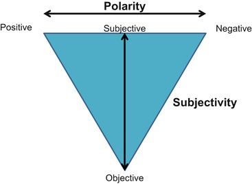
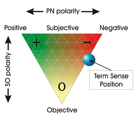

Sentiment Analysis 101
Português >English v
Concept
SA is contextual mining of text which identifies and extracts subjective information in source material, and helping a business to understand the social sentiment of their brand, product or service.

Analysis
Two parameters are essential in a SA, Polarity and Subjectivity.
Polarity, is the emotion in a sentence
Subjectivity, is the personanl feelings, visions in that sentence
Some Examples
I'm like this speech The sentence above show a example of Polarity I'm here today to see this speech This one perhaps, show a a example of subjectivityPolarity X Subjectivity
Polarity X Subjectivity
Natural Language Processing (NLP)
The computer don't know the meaning of words in a sentence, that's why we use NLP, and after a Tokenization, we have POS (part of speech) terms
POS Tags

Sentiment Analysis From Twitter
Now, in this small example, we go analise the sentiment of a hashtag.
For this SA, we use TextBlob module.
from textblob import TextBlob as tb
import tweepy
import numpy as np
consumer_key = 'your consumer key'
consumer_secret = 'your consumer secret'
access_token = 'your access token'
access_token_secret = 'your acess token secret'
auth = tweepy.OAuthHandler(consumer_key, consumer_secret)
auth.set_access_token(access_token, access_token_secret)
api = tweepy.API(auth)
public_tweets = api.search('Github')
analysis = None
for tweet in public_tweets:
print(tweet.text)
analysis = tb(tweet.text)
print(analysis.sentiment.polarity)
SA of TextBlob
Created a blob with the text from tweet, and after analysis we have a average with the range of [-1.0, 1.0]
Where values under zero, are negative feelings, and above zero, positive feelings

print('Thank You!')
github.com/newtongalizanewtonjgaliza@gmail.com
@newtongaliza
Conceito
AS é uma análise contextual que busca identificar e extrair informação subjetiva do material fonte, com o objetivo de ajudar um negócio, marca ou serviço a entender o sentimento social atrelado a ele. Geralmente realizando monitaramento em redes sociais.
Análise
Dois parâmetros são primordiais numa AS, Polaridade e Subjetividade.
Polaridade, é a emoção expressa em uma sentença.
Subjetividade, é a expressão de sentimentos pessoais, visão ou crença.
Alguns Exemplos
Estou gostando dessa palestra. A sentença acima mostra um exemplo de Polaridade Estou aqui hoje vendo uma palestra sobre Análise de Sentimento. Já essa sentença, mostra um exemplo de subjetividadePolaridade x Subjetividade
Polaridade x Subjetividade
Natural Language Processing (NLP)
O computador não sabe o significado das palavras presentes numa sentença, para isso usamos NLP, que vai passar por uma Tokenization, para entao termos um POS(part of speech).
POS Tags
Análise de Sentimentos do Twitter
Vamos agora para um pequeno exemplo, onde iremos analisar os sentimentos de uma determinada hashtag.
Iremos utilizar o módulo TextBlob.
from textblob import TextBlob as tb
import tweepy
import numpy as np
consumer_key = 'your consumer key'
consumer_secret = 'your consumer secret'
access_token = 'your access token'
access_token_secret = 'your acess token secret'
auth = tweepy.OAuthHandler(consumer_key, consumer_secret)
auth.set_access_token(access_token, access_token_secret)
api = tweepy.API(auth)
public_tweets = api.search('Github')
analysis = None
for tweet in public_tweets:
print(tweet.text)
analysis = tb(tweet.text)
print(analysis.sentiment.polarity)
AS do TextBlob
Criamos um blob com o texto do tweet, e após análise temos um resultado com uma média de range [-1.0, 1.0]
Onde valores abaixo de zero, são sentimentos negativos e acima de zero, análises satisfatórias
print('Muito Obrigado!')
github.com/newtongalizanewtonjgaliza@gmail.com
@newtongaliza